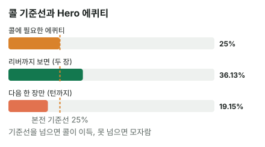

안녕하세요. I01·I02에서 아웃츠와 2·4 법칙을 배웠고, I05에서 에퀴티를 정확히 정의했죠. 오늘은 그걸 처음으로 실제 스팟에 써 봐요.
드로우 콜은 리버 콜과 다른 점이 하나 있어요. 콜한 뒤에도 카드와 베팅이 남아 있다는 거예요. 그래서 같은 핸드, 같은 벳인데도 "리버까지 본다"고 생각하면 콜, "다음 한 장만 본다"고 생각하면 모자라는 콜이 될 수 있어요. 오늘은 이 차이가 어디서 오는지 숫자로 따라가 볼게요.
이 글에서 배울 것
- 플러시 드로우의 콜 판단에 두 가지 숫자(리버까지의 에퀴티, 다음 한 장에 맞을 확률)가 나오는 이유
- 두 숫자 중 무엇을 쓸지는 이번 콜이 카드 몇 장을 사느냐가 정하고, 그걸 정하는 건 상대라는 것
- 에퀴티가 플러시 확률과 다른 이유: 플러시 말고 이기는 길과, 플러시가 맞아도 지는 경우
오늘의 핸드
Hero (BB 자리 · 스택 100BB)


프리플랍
상대(BTN) 2.5BB 오픈 → SB 폴드 → Hero 콜
팟 5.5BB
플랍 · 팟 5.5BB


Hero 체크 → 상대 2.75BB 벳(하프팟) → Hero는 콜? 폴드?
Hero는 아직 하이카드(아무 페어도 없음)지만, 스페이드가 4장이라 플러시 드로우예요.
결론부터 말할게요. 턴·리버에 추가 베팅 없이 리버까지 간다고 보면 콜이 이득입니다.
남은 베팅이 있어 실제 결과는 달라질 수 있어요. 그래서 오늘은 금액(EV) 대신 에퀴티 vs 필요 에퀴티로만 판정해요.
하지만 "다음 한 장만" 놓고 보면 기준선에 모자라요. 이 차이가 오늘의 핵심이에요.
1단계. 필요 에퀴티
필요 에퀴티 = 콜해서 본전이 되려면 최소한 이겨야 하는 확률이었죠(B06). 비유하면 시험의 합격선이에요.
필요 에퀴티 = 2.75(Hero 콜) ÷ (5.5(원래 팟) + 2.75(상대 벳) + 2.75(Hero 콜)) = 2.75 ÷ 11 = 25%
하프팟이라 4번 중 1번이에요.
2단계. 상대 레인지 (가정 레인지 기준)
상대가 이 벳으로 들고 있을 핸드
상대가 이 보드에 벳하는 핸드를 K 탑페어(AK·KQ·KJ·KT)와 셋(99·22)으로 가정할게요. 이렇게 상대가 들고 있을 핸드들을 묶어 레인지라고 해요. 더 넓게 잡으면 숫자가 달라져요.
| 핸드 | 콤보 | 왜 이 숫자? |
|---|---|---|
| AK | 12 | K 3장(K♠는 보드) × A 4장 |
| KQ | 12 | K 3장 × Q 4장 |
| KJ | 12 | K 3장 × J 4장 |
| KT | 12 | K 3장 × T 4장 |
| 99 | 3 | 9♠가 보드에 있어서 3콤보 |
| 22 | 3 | 2♦가 보드에 있어서 3콤보 |
| 합계 | 54 |
💡 빨리 세는 팁: 보드에 K가 1장 → 남은 K 3장. 그래서 K와 다른 숫자는 3 × 4 = 12 (자세한 건 I32에서 다뤄요)
지금은 모두 Hero보다 앞서요
이 54콤보는 지금 모두 Hero보다 앞서 있어요. 그리고 전부 이미 완성된 핸드(메이드 핸드)라는 점을 기억해 두세요. 뒤에서 이게 중요해져요.
3단계. Hero의 아웃츠와 에퀴티
플러시 확률
남은 스페이드는 9장(I01): 2♠ 3♠ 4♠ 5♠ 8♠ T♠ J♠ Q♠ A♠. Hero가 아는 카드(Hero 2장 + 보드 3장)를 뺀 47장 중 9장이에요.
| 기준 | 확률 | 2·4 법칙 어림 |
|---|---|---|
| 다음 한 장(턴)에 플러시 | 약 19.15% | 18% |
| 리버까지 두 장 안에 플러시 | 약 34.97% | 36% |
| 가정 레인지 상대 에퀴티(리버까지, 모든 경우 계산) | 약 36.1% | — |
에퀴티 약 36.1%는 플러시 확률 약 34.97%보다 조금만 높아요. 더해지는 길과 깎이는 길이 둘 다 있어서예요.
플러시 말고 이기는 길
턴·리버 두 장이 연달아 맞아야 하는 길들이에요.
- 스트레이트 두 가지: 8과 5가 나오면 5-6-7-8-9, 8과 T가 나오면 6-7-8-9-T. 스트레이트는 K 탑페어뿐 아니라 셋도 이겨요. 이 레인지에서 플러시 말고 더해지는 몫 중 가장 커요
- 투페어: 7과 6이 하나씩 나오면 K 원페어를 이겨요. 셋에게는 져요
- 트립스: 7이나 6이 두 장 나오면 K 원페어를 이겨요. 이것도 셋에게는 져요(보드 짝 때문에 셋이 풀하우스)
플러시가 맞아도 지는 경우
반대로 깎이는 길은 세 가지예요.
- 턴 2♠: 보드 2가 짝이 맞아 99는 풀하우스가 돼요. 22는 세 콤보 중 2♠2♥·2♠2♣는 2♠를 이미 들고 있으니 해당이 없고, 2♥2♣ 한 콤보만 포카드가 돼요. K♠·9♠는 이미 보드에 있으니 이런 스페이드는 2♠ 한 장뿐이에요
- 플러시 뒤 리버 보드 페어: 턴에 스페이드로 플러시를 맞춰도, 리버에 K·9·2나 턴 카드와 같은 숫자가 나오면 셋이 풀하우스가 돼요
- 상대 손의 더 높은 스페이드: AK·KQ·KJ·KT 중 A♠·Q♠·J♠·T♠를 든 12콤보는 스페이드가 두 장 연달아 오면 Hero보다 높은 플러시가 돼요. 이 콤보 상대로는 그 스페이드가 상대 손에 있으니 Hero 아웃츠도 8장이에요. 8♠5♠·T♠8♠처럼 Hero가 스트레이트 플러시가 되는 두 경우만 예외예요
이렇게 맞아도 지는 카드를 더러운 아웃츠라고 불러요. 플러시 확률만 보면 안 보이는 부분이죠.
4단계. 두 가지 계산은 무엇이 다를까?
두 숫자는 종류가 달라요
약 36.1%는 가정 레인지 상대로 리버까지 본 에퀴티, 약 19.15%는 턴 한 장에 플러시가 맞을 확률이에요. 한 장 기준은 계산기의 에퀴티가 아니라 플러시 확률만 쓴 어림이에요.
① 턴·리버에 추가 베팅이 없다면
두 장을 다 보니 에퀴티 약 36.1%를 그대로 써요. 36.1% > 25%라 콜이에요.
② 턴에 못 맞추면 접어야 한다면
턴에 상대가 크게 벳해서 못 맞춘 Hero가 접는다면, 이번 콜로 확실히 사는 건 턴 한 장뿐이에요. 그러면 약 19.15%와 비교해야 하고, 19.15% < 25%라 모자라요.

실제는 보통 둘 사이
실제로는 상대가 턴에 체크할 때도, 벳할 때도 있으니 보통 둘 사이 어딘가예요. 그리고 플러시가 맞았을 때 상대에게 더 받아낼 수 있다면 ①보다 더 좋아질 수도 있어요. 이게 임플라이드 오즈예요(I09에서 배워요).
왜 그럴까: 리버를 공짜로 볼지는 상대가 정해요
플랍 콜은 턴 카드 한 장짜리 표예요
리버 콜은 그걸로 끝이라 비교 하나로 결론이 나요. 플랍 콜이 확실히 사는 건 턴 카드 한 장이고, 리버는 턴에 무슨 일이 생기느냐에 따라 공짜일 수도, 돈을 더 내야 할 수도 있어요.
포지션이 "몇 장을 사는가"를 정해요
Hero는 BB라 턴에 먼저 행동해요. Hero가 체크하면, 마지막에 행동하는 상대가 Hero의 체크를 보고 걸지 말지 골라요. 그러니까 공짜 리버는 상대가 체크로 넘겨 줄 때만 와요. (Hero가 턴에 먼저 거는 선택도 있지만, 오늘은 체크·콜로 따라가는 경우만 봐요.)
이게 무슨 뜻이냐면, 이번 콜이 한 장을 살지 두 장을 살지를 Hero가 아니라 상대가 정한다는 거예요. 포지션이 뒤인 쪽이 리버 가격을 쥐고 있는 셈이죠.
이 레인지는 턴 체크가 잘 안 나와요
가정 레인지는 K 탑페어와 셋, 전부 메이드 핸드예요. 턴에 스페이드가 안 나오면 이 핸드들은 여전히 앞서 있고, 드로우에게 리버를 공짜로 줄 이유가 적어요. 그래서 이 레인지 상대로는 ②에 가까운 장면이 나올 수 있어요.
반대로 상대 레인지에 아무것도 없는 핸드(블러프)가 섞여 있다면, 턴에 포기하고 체크하는 경우가 생기면서 ①에 가까워져요.
자주 하는 실수
실수 1. 벳을 맞은 플랍에서 리버까지의 숫자만 보기 "36.1%니까 넉넉하게 콜" 하고 끝내는 실수예요. 그 숫자는 리버까지 공짜로 간다는 값인데, 오늘 레인지는 턴에 계속 걸 수 있는 메이드 핸드뿐이에요. 대신 콜하기 전에 "턴에 상대가 체크할 핸드가 있나?"를 같이 물어요.
실수 2. 턴에 못 맞췄는데 플랍 계산을 그대로 쓰기 플랍에서 콜했으니 턴에도 콜하는 실수예요. 턴에 빗나가면 남은 카드는 리버 한 장뿐이라, 플러시 확률도 46장 중 9장으로 다시 구해야 해요. 상대 벳 크기에 따라 기준선도 새로 정해지고요. 대신 스트리트마다 처음부터 다시 계산해요.
실수 3. 스페이드만 나오면 이긴다고 보기 아웃츠 9장을 모두 이기는 카드로 세는 실수예요. 2♠는 99를 풀하우스로 만들고, 스페이드가 두 장 오면 높은 스페이드를 든 K 탑페어가 Hero보다 높은 플러시가 돼요. 대신 아웃츠를 셌으면 "이 카드로 상대도 좋아지나?"를 한 번 더 봐요.
"그래서 이 핸드는 결국 콜이에요, 폴드예요?"
좋은 질문이에요. 오늘 결론은 가정(턴·리버에 추가 베팅 없음) 아래서는 콜이에요. 36.1%가 25%보다 넉넉히 높으니까요.
다만 이 가정 레인지처럼 상대가 턴에 계속 걸 핸드뿐이라면, 이번 콜이 사는 건 한 장에 가까워지고 콜의 여유가 줄어요. 그 모자람을 메워 주는 게 플러시가 맞았을 때 상대에게 더 받는 돈, 임플라이드 오즈예요. 그 돈을 얼마나 받아야 하는지는 I09에서 배워요.
그러니 "콜이냐 폴드냐"보다 정확한 대답은 이거예요. 가정 아래서는 콜, 그리고 그 콜이 얼마나 튼튼한지는 상대의 턴 행동과 맞았을 때 받을 돈이 정한다.
숫자가 뒤집히는 지점
기준은 두 가지예요.
- 상대 벳 크기가 바뀌면: 필요 에퀴티가 다시 계산돼요. 비교할 숫자(두 장이면 에퀴티, 한 장이면 플러시 확률)보다 높아지면 폴드 쪽으로 기울어요
- 이번 콜이 사는 카드 수가 바뀌면: 비교할 숫자가 리버까지의 에퀴티와 다음 한 장 확률(약 19.15%) 사이에서 움직여요
선생님의 한마디
드로우로 콜하기 전에 이런 습관을 들여 보세요.
- 칩을 내기 전에 "턴에 빗나가면 어떤 벳까지 콜할지"를 미리 정해 두기. 턴에 가서 처음 고민하면 본전 생각에 끌려가요
- 플러시가 맞는 턴에 상대가 계속 걸지, 멈출지도 같이 떠올려 두기. 맞았을 때 받을 돈이 이 콜의 빈틈을 메워요
연습 문제 (같은 보드, 같은 Hero 핸드)
학습툴 에퀴티 계산기의 레인지 입력은 확인 중이에요. 지금은 정답의 숫자(블로그에서 직접 계산한 값)를 따라가 보고, 학습툴에는 핸드 대 핸드(내 핸드와 상대 핸드 하나)만 넣어 확인해 보세요.
문제 1. 상대 스택이 플랍에서 5.5BB만 남아 있었고, 그걸 전부 걸었어요(올인). 상대 레인지는 오늘 가정 그대로예요. 이번 콜이 사는 카드는 몇 장이고, 어느 숫자와 비교해야 할까요? 콜해도 될까요?
정답 보기
상대가 올인이라 더 걸 돈이 없어요. 이번 콜로 턴·리버 두 장을 다 사요. 그래서 리버까지의 에퀴티 약 36.1%와 비교해요. 필요 에퀴티 = 5.5 ÷ (5.5 + 5.5 + 5.5) = 5.5 ÷ 16.5 = 33.33% < 36.1% → 콜. 벳은 하프팟보다 두 배 크지만, 두 장을 확실히 사니 오히려 계산이 단순해져요.
문제 2. 상대가 1.75BB만 걸었어요. 그런데 이 상대는 턴에 스페이드가 안 나오면 반드시 크게 걸고, Hero는 그때 접는다고 할게요(맞았을 때 더 받는 돈은 생각하지 않아요). 이번 콜이 사는 카드는 몇 장이고, 콜해도 될까요?
정답 보기
턴에 빗나가면 접으니 이번 콜이 사는 건 턴 한 장이에요. 비교할 숫자는 약 19.15%. 필요 에퀴티 = 1.75 ÷ (5.5 + 1.75 + 1.75) = 1.75 ÷ 9 = 19.44%. 약 19.15%와 거의 같고 아주 조금 모자라요. 추가 베팅이 없다면 약 36.1%로 넉넉한 콜이었을 벳인데, 상대의 턴 행동 하나로 본전 근처까지 내려왔어요. 남은 차이는 아주 작아서, 맞았을 때 조금만 더 받아도 메워지는 크기예요.
핵심 정리
- 플랍 드로우 콜에는 리버까지의 에퀴티와 다음 한 장에 맞을 확률, 두 숫자가 있어요
- 어느 쪽과 비교할지는 이번 콜이 사는 카드 수가 정해요. 상대가 올인이면 두 장, 턴에 반드시 걸면 한 장이에요
- 먼저 행동하는 쪽은 공짜 리버를 스스로 정할 수 없어요. 마지막에 행동하는 쪽이 리버 가격을 쥐어요
- 에퀴티는 플러시 확률에 스트레이트·투페어·트립스가 더해지고, 보드 페어·더 높은 플러시가 빠진 값이에요
정리하며
오늘은 플랍에서 하프팟 벳을 맞은 플러시 드로우로 콜할지 정했어요.
기준선 25%에 대해, 리버까지 공짜로 간다면 에퀴티 약 36.1%로 콜이고, 턴 한 장만 본다면 플러시 확률 약 19.15%로 모자랐죠. 결론이 갈린 건 이번 콜이 사는 카드 수가 달라서였고, 그 수를 정하는 건 턴에 마지막으로 행동하는 상대였어요. 그래서 가정 아래 콜이라는 결론 위에, 상대의 턴 행동과 맞았을 때 받을 돈을 얹어서 판단해요.
다음 글 I06에서는 오늘 가정으로 정해 둔 상대 레인지를 본격적으로 다뤄요. 오늘은 레인지를 정해 놓고 썼다면, 다음 글은 상대가 핸드 하나가 아니라 여러 핸드 중 하나일 때 에퀴티를 어떻게 구하는지 봐요.
AI 작성 · 숫자는 계산 검증 · 가정 레인지 기준 (솔버 결과 아님) · 이번 한 번의 결정 기준(턴 이후 베팅은 계산에 넣지 않음)